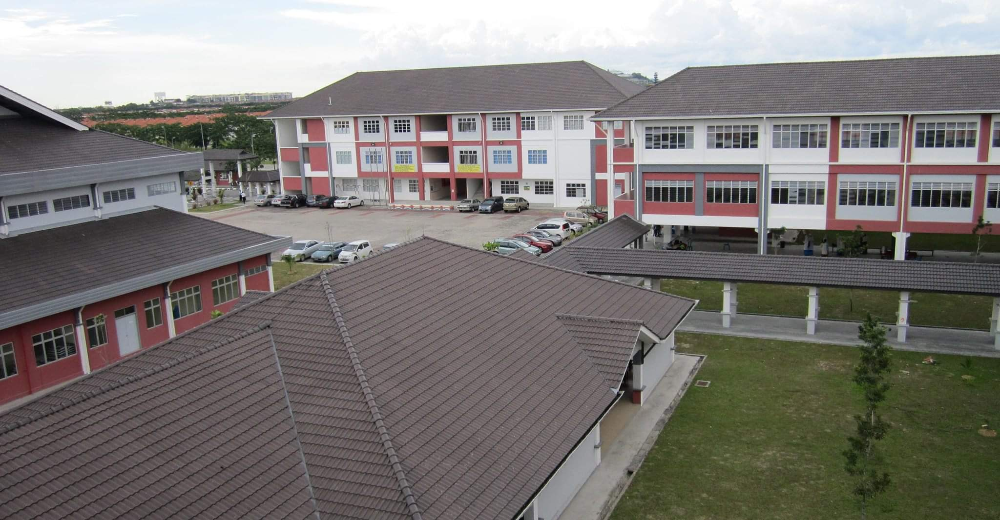

Sejarah Sekolah
1 / 3

Bangunan sekolah dari hadapan
2 / 3

Pintu masuk utama sekolah
3 / 3

Kawasan persekitaran sekolah
SMK Setia Alam mula beroperasi pada 1 Disember 2009 dengan pelajar sulung seramai 359 orang. Pada ketika itu, sekolah ini beroperasi di sesi petang di SMK Meru, Klang sementara menunggu bangunan tetap siap sepenuhnya.
Pada Januari 2010, SMK Setia Alam berpindah ke bangunan sekolah yang terletak di Persiaran Setia Indah, Setia Alam. Sekolah ini dibina dengan kos RM40 juta dan mempunyai kemudahan lengkap termasuk bilik darjah, makmal sains, bilik komputer, perpustakaan, dan kemudahan sukan.
Sejak penubuhannya, SMK Setia Alam terus berkembang pesat dalam bidang akademik dan kokurikulum, dengan sokongan guru-guru yang berdedikasi serta ibu bapa dan komuniti setempat.